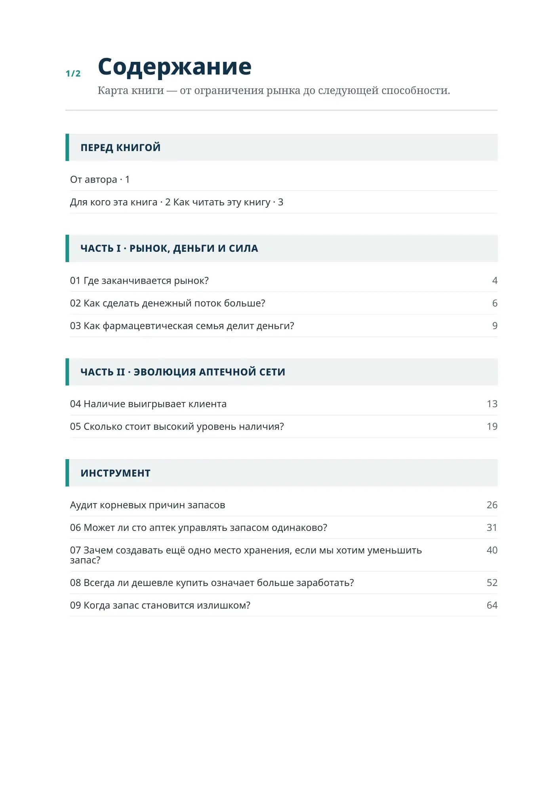
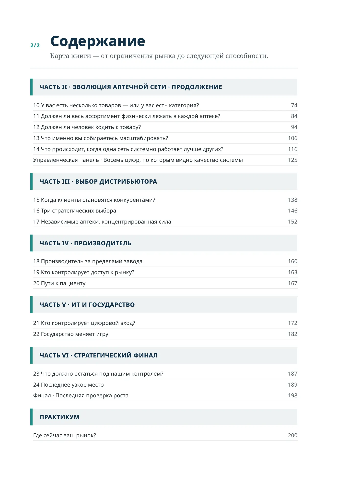

Печатное содержание
1/2
Содержание
Карта книги — от ограничения рынка до следующей способности.
От автора · 1
Для кого эта книга · 2 Как читать эту книгу · 3
01 Где заканчивается рынок?
4
02 Как сделать денежный поток больше?
6
03 Как фармацевтическая семья делит деньги?
9
04 Наличие выигрывает клиента
13
05 Сколько стоит высокий уровень наличия?
19
Аудит корневых причин запасов
26
06 Может ли сто аптек управлять запасом одинаково?
31
07 Зачем создавать ещё одно место хранения, если мы хотим уменьшить
запас?
40
08 Всегда ли дешевле купить означает больше заработать?
52
09 Когда запас становится излишком?
64
2/2
Содержание
Карта книги — от ограничения рынка до следующей способности.
10 У вас есть несколько товаров — или у вас есть категория?
74
11 Должен ли весь ассортимент физически лежать в каждой аптеке?
84
12 Должен ли человек ходить к товару?
94
13 Что именно вы собираетесь масштабировать?
106
14 Что происходит, когда одна сеть системно работает лучше других?
116
Управленческая панель · Восемь цифр, по которым видно качество системы
125
15 Когда клиенты становятся конкурентами?
138
16 Три стратегических выбора
146
17 Независимые аптеки, концентрированная сила
152
18 Производитель за пределами завода
160
19 Кто контролирует доступ к рынку?
163
20 Пути к пациенту
167
21 Кто контролирует цифровой вход?
172
22 Государство меняет игру
182
23 Что должно остаться под нашим контролем?
187
24 Последнее узкое место
189
Финал · Последняя проверка роста
198
Где сейчас ваш рынок?
200